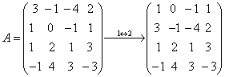
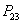
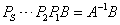

2.5 矩阵的初等变换与初等方阵
一、初等变换
必须注意：矩阵的初等变换与行列式计算有本质区别，行列式计算是求值过程，前后用等号连接。对矩阵施行初等变换是变换过程，即把一个矩阵变成另一个矩阵，前后两个矩阵是不相等的。因此，我们用“
显然等价的矩阵都是同型矩阵。 矩阵的等价关系有以下三条性质： （1）反身性： （2）对称性：若 （3）传递性：若 |
二、初等变换的目标与等价标准形
|
对给定矩阵施行初等变换，打算变换成什么样的矩阵？当然希望变得简单，有以下两种矩阵是变换的目标。
例如，均为阶梯阵。
例如均为简化阶梯阵。 当然，单位方阵E也是简化阶梯阵。
注意：本定理中只要求对矩阵施行初等行变换，而不必作初等列变换。 |
|
例1：用初等行变换化矩阵A为阶梯阵及简化阶梯阵，其中 解：  上述B为阶梯形矩阵，C为简化阶梯形矩阵。 例题说明：对任意矩阵可以类似地用初等行变换化成阶梯阵，对例1，我们如果再施行初等列变换： 把D称为矩阵A的等价标准形，一般地有：
|
三、初等方阵
由于初等变换有三种，相应地初等方阵也有三种，以三阶为例： 第一种： 第二种： 第三种： 当然也是由交换第2，3列而得，由的第1列乘以非零数k而得，由的第3列的k倍加到第1列而得。 |
|
由行列式性质，容易得到：，说明初等方阵都是可逆矩阵。且。 说明任何一种初等方阵的逆矩阵仍然是同一种初等方阵。 初等方阵与初等变换有下述关系。
|
四、用初等行变换求可逆矩阵的逆矩阵
|
由定理5.1知，任何一个矩阵都能经过若干次初等行变换化成简化阶梯形矩阵，当这个矩阵A是可逆矩阵时，即存在若干个初等方阵，使得 设A是n阶可逆矩阵，构造分块矩阵（A，E），它是矩阵，然后用初等行变换把(A，E)化成，即当（A，E）中A的部分化成E时，E就化成了 注意：对矩阵（A，E）只能施行初等行变换，绝不能用初等列变换。 |
|
例2：求的逆矩阵。 解： 
则。 |
五、用矩阵的初等变换求解矩阵方程
|
最常见的矩阵方程有以下两类： （1）设A是n阶可逆矩阵，B是 求矩阵X的方法： 因为A可逆，故在方程两边左乘 由前面，不妨设 ……（1） ……（2） ……（3） 由（1），（3）联系起来，则 例3：求解矩阵方程 解：设A=，B=，则 于是， |
|
（2）设A是n阶可逆矩阵，B是 把矩阵方程两边取转置，得到，从而，最后再把转置，即可求出X。 解法： 例4：求解矩阵方程  。 。解：设 则 则，即有。 |
请认真答题，测试一下你对前面知识点的学习情况！
(单选题) 8．矩阵的逆矩阵是（ ）
【答案】C
【解析】
【知识点】用初等行变换求可逆矩阵的逆矩阵
请认真答题，测试一下你对前面知识点的学习情况！
(单选题) 9．已知， ， ，矩阵满足AXB=C，则X=（ ）。
【答案】D
【解析】 因为AXB=C,故 ,
,
而
【知识点】用矩阵的初等变换求解矩阵方程